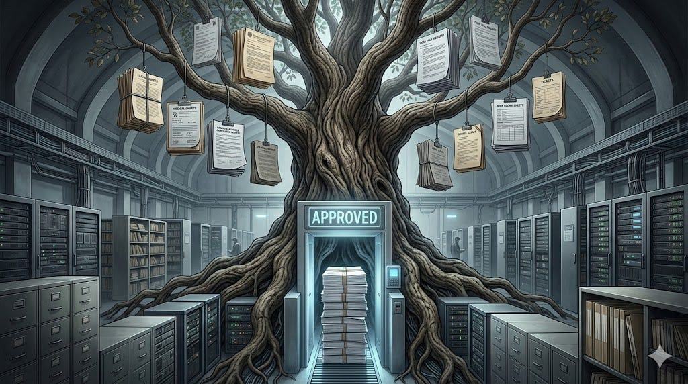
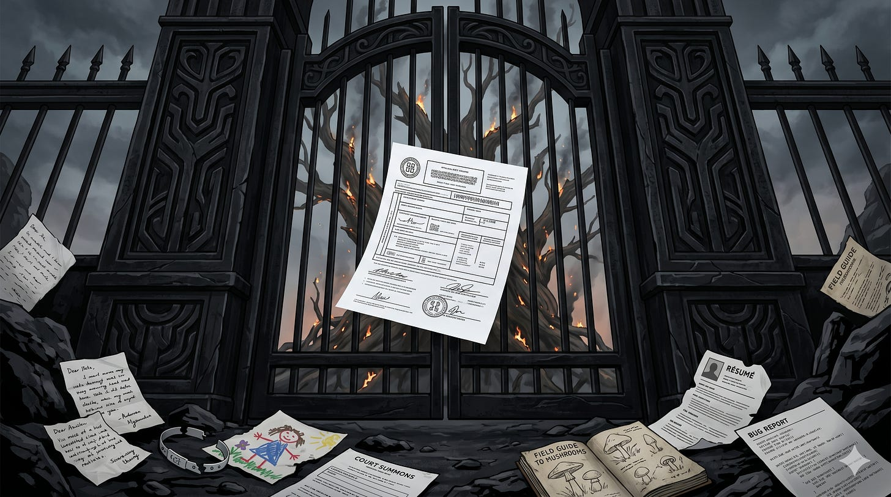

AI is dangerous not because it knows everything, and not because it is conscious. AI is dangerous because it can pass.
It can pass as a memo.
Pass as a legal argument.
Pass as code.
Pass as compliance.
Pass as a student essay.
Pass as a clinical summary.
Pass as a strategy document.
Pass as a ticket.
Pass as evidence-shaped language.
Pass as work.
For most of history, producing the right form required cost: training, time, apprenticeship, literacy, institutional access, discipline, professional fluency. The cost of form acted as a rough proxy for competence, seriousness, accountability, and stake.
AI collapses that cost.
It does not merely create content. It creates form-fitting content. It can dress a weak claim in the clothing of authority. It can make speculation look like analysis. It can make a shortcut look like procedure. It can make a hallucination look like a memo. It can make a private appetite look like policy.
This is not merely misinformation. Misinformation is content-level deception. This is deeper. This is admissibility mimicry.
The machine learns the shape of what institutions accept, then produces outputs in that shape. The output may be correct. It may be wrong. It may be partial, garbled, fabricated, or stolen. But the dangerous thing is not only the content.
The dangerous thing is the pass.
The danger is not that AI lies. The danger is that AI lies in the correct form.
Civilization runs on forms
Civilization does not deal with reality directly. It deals with reality after reality has been formatted.
A person is not sick in the eyes of a system until there is a chart, a code, a claim, a prescription, a bill.
A grievance is not actionable until it becomes a complaint, a filing, a case number.
A discovery is not knowledge until it becomes a paper, a citation, a method.
A worker is not legible until there is a résumé, a payroll record, a credential.
A software change is not real until it becomes a branch, a pull request, a commit.
A wound is not legal until it becomes evidence.
A family is not legitimate until it becomes a registration.
A death is not a death until it becomes a certificate.
Form is the gate through which reality becomes admissible.
Before a system asks whether something is true, good, just, urgent, or dangerous, it asks something else first. It asks whether the thing has arrived in a form the system knows how to process.
This is why true things can be ignored. They arrive as pain, rumor, intuition, oral memory, informal warning, lived experience. The system says: not evidence, not properly submitted, wrong channel, insufficient documentation, no standing, no category, no form.
This is also why false things can travel. They arrive formatted. They have headings. They have citations. They have the right fields filled in. They have professional tone. They fit the workflow.
Power recognizes form before it recognizes truth. That was always dangerous. AI is making it unstable.
The old safety layer was not truth. It was friction.
We like to think institutions are protected by wisdom, ethics, expertise, review, law, or procedure.
Sometimes they are.
But a larger part of civilization’s safety came from something less noble.
It came from the cost of producing the right form.
A legal brief required legal training.
A scientific paper required method and discipline.
A grant application required bureaucratic fluency.
A board memo required organizational standing.
A medical chart required professional access.
A compliance report required knowing the rules.
A convincing public argument required rhetorical labor.
The cost of form did not guarantee truth.
But it slowed falsehood down.
It forced time into the chain. It forced effort. It forced contact with the community that maintained the form. It created points where other humans could interrupt, ignore, challenge, or refuse. It demanded skill and patience that most bad ideas could not summon.
Most bad ideas died before they reached consequence.
They did not die because they were tested. They died because they could not be assembled. The author got tired. The paperwork was too complex. The argument could not be shaped. The form demanded something the idea could not survive.
This friction was unfair. It protected insiders. It excluded outsiders. It buried real suffering under procedural demand. It made whole classes of people illegible.
But it also acted as an accidental safety layer. It kept partial knowledge from becoming instant consequence. That is the layer AI is now eroding. Not by breaking the rules. By learning the forms.
The Tree of Knowledge was guarded by cost
There is an old story about a tree whose fruit was not ordinary fruit. It gave knowledge of good and evil.
For readers outside that tradition: the image comes from Genesis, the opening book of the Hebrew Bible and Christian Old Testament. The first humans are forbidden to eat from the Tree of Knowledge. When they eat from it, their perception changes. They become aware, ashamed, exposed. Whether read as theology, myth, literature, anthropology, or civilizational memory, the story has always been about a threshold: the moment knowing stops being mediated and becomes something humans can seize directly.
But the story has a feature that often gets missed. Knowing was always defended by cost. The fruit had to be taken. Eating it cost expulsion from a garden. Knowledge came with shame, labor, mortality. The cost was not punishment grafted onto knowing. The cost was the price of knowing.
Every civilization since has reproduced that pattern.
Wisdom required years.
Synthesis required scholarship.
Testimony required courts.
Discovery required pain.
Pattern perception across a society required either being a god, a priesthood, a state, or a person who had paid attention long enough to become dangerous.
The cost of seeing kept seeing honest. The cost is gone now. But that is not the whole headline. The headline is what the cost of seeing was protecting. It was not protecting truth. Civilizations have never been very good at truth. It was protecting form.
Search found the fruit. AI processed it. Agents give it hands.
The first internet did not make knowledge dangerous. It made knowledge searchable. Search broke the old monopolies around access. You no longer had to be inside the university, newsroom, ministry, library, corporation, or priesthood to find things.
But search was not action.
You still had to know what to search for. You still had to choose the source. You still had to read. You still had to understand. You still had to compare. You still had to decide. Then you had to act with your own hands, your own time, your own risk, your own courage, your own money, your own authority.
The internet made knowledge available. It did not remove the human as the bottleneck between knowledge and consequence.
AI changed that. AI did not merely make knowledge easier to find. It made knowledge executable.
A search engine points you somewhere. An AI system begins doing the work. It drafts the email. It writes the code. It summarizes the contract. It generates the strategy. It translates the document. It designs the image. It compares the options. It produces the argument. It turns scattered information into usable form.
The old chain looked like this:
search → read → understand → decide → act
AI compressed it:
ask → receive usable output
That compression is why AI feels magical. The value was never only in the information. The value was in the transformation: turning knowledge into something the world would accept.
But agentic AI changes the category again.
An agent does not merely answer. It can operate. It can move through tools, files, browsers, repositories, calendars, ticketing systems, databases, workflows, APIs, documents, and approval chains. It can read state, change state, create artifacts, trigger actions, ask for review, retry, hand off, escalate, and continue across time.
The chain becomes:
intent → delegated action → external state change
That is where the real threshold begins. The danger is not that machines know more than people. The danger is that knowledge can now move toward consequence with less friction than civilization is built to handle.

Synthesis became cheap. Now form becomes cheap.
For most of history, synthesis was rare and expensive.
A scholar’s life work.
A judge’s decades of judgment.
A journalist’s months in the archive.
A doctor’s accumulated cases.
A general’s hard-won read of a battlefield.
A grandmother’s memory of who people really were.
A society’s slow recognition that something it had normalized was killing it.
Synthesis was the achievement that justified a position. The forum — the court, council, seminar, editorial board, peer review process, town meeting, jury — was built around the cost of producing it.
A model performs synthesis in seconds.
It does not become a god. It does not become wise. It compresses a vast statistical residue of human expression into something readable. That is not omniscience. It is industrial-scale synthesis.
And once synthesis becomes cheap, form becomes cheap too.
The policy memo can be generated.
The legal argument can be generated.
The grant proposal can be generated.
The customer-support reply can be generated.
The compliance report can be generated.
The performance review can be generated.
The academic-looking essay can be generated.
The risk explanation can be generated.
The ticket update can be generated.
The code change can be generated.
The apology can be generated.
The sermon can be generated.
The illusion of institutional fluency can be generated.
This is the dangerous thing: AI does not merely create content. It creates form-fitting content.
It can make speculation look like analysis.
It can make a shortcut look like procedure.
It can make a hallucination look like a memo.
It can make a private appetite look like policy.
It can make an unsupported claim look ready for review.
It can make a thing pass.
The receipts
This is not a future problem. The failure of form is already documented across professions.
In law, court filings have contained fabricated AI-generated citations. The filings have come from untrained pro se litigants, lawyers, and even judicial contexts. The form held: the motion, the citation, the professional language. The check that should have caught the error failed before the document reached consequence.
In medicine, AI transcription systems have inserted fabricated text into medical transcripts, including invented medications and phrases generated during moments of patient silence. In some deployments, the original audio is unavailable after transcription. The form survives. The witness is gone.
In the sciences, papers have reached publication with chatbot residue still visible: phrases like “as of my last knowledge update” or interface artifacts that should never have survived peer review. The retractions show the system correcting itself after the fact. The fact that the passages entered the journals at all shows that the forum had already failed.
In journalism, AI-generated or AI-assisted articles have been published under institutional brands, sometimes with fictitious bylines or fabricated author identities. The byline — the old signal that a person stands behind this — can now be filled by something that is not a person.
At the extreme edge, AI-generated mushroom foraging books have appeared on marketplaces with dangerous advice formatted as field knowledge. The form here is older than peer review: guidebook authority, accumulated practical knowledge, the slow discipline of not dying. A generated claim can appear beside genuine expertise at the same price, in the same marketplace, wearing the same shape.
The pattern is the same across domains. The form arrives faster than the check that should test it. The check has not been rebuilt. The form becomes a fact in someone’s filing, someone’s chart, someone’s article, someone’s basket of mushrooms. By the time the error is named, the consequence has already begun.
The fifth thing
A model output fits poorly into the categories institutions were built to handle.
It is not testimony. No person swears to it. No person can be cross-examined on its internal compression.
It is not a document in the old sense. It was generated, not authored.
It is not measurement. It was synthesized, not observed.
It is not deduction. It was sampled, not proven.
It is a fifth thing.
And the fifth thing is entering the old forms.
Into memos.
Into pleadings.
Into reports.
Into charts.
Into tickets.
Into pull requests.
Into schoolwork.
Into performance reviews.
Into risk assessments.
Into intelligence products.
Into dashboards.
Into recommendations.
It arrives wearing familiar clothes.
That is the danger.
People do not know they are dealing with a fifth thing because it has entered the building disguised as the first four. It looks like work.
The forum disappeared
Civilization’s institutions for testing interpretation — courts, peer review, parliaments, newsrooms, scholarly councils, juries, editorial boards — were not built around truth in the abstract. They were built around testimony that was costly to produce, slow to deliver, and expensive to defend.
The forum existed because synthesis was rare. The forum tested synthesis because synthesis was the load-bearing thing on which power, judgment, money, legitimacy, and consequence rested. Synthesis is no longer rare. The forum has not caught up.
A claim that survives slow review is a claim that has been forced to defend itself. A claim that travels at machine speed through a private pipeline does not have to defend itself at all. It is admitted because it looks like the kind of thing that gets admitted.
The old institutions were not slow only because they were inefficient. They were slow because slowness was where part of the discipline lived.
The discipline was: can you produce this form, with these proofs, in this language, under your name, and survive what comes next?
Take away the cost of producing the form, and the discipline that lived in the cost goes with it. What remains is the form. A perfectly preserved container. Empty.
Agents make the problem operational
If AI only synthesized, the forum problem would remain mostly epistemic.
What did the model say?
Was the summary accurate?
Was the recommendation biased?
Was the output misleading?
But agents do not stop at saying. Agents can act on synthesis. They convert interpretation into operation. That means the missing forum is no longer only about truth. It is about action permission. Before a synthesis becomes an action, something must ask:
What evidence supports this?
What form is carrying it?
What is the failure condition?
Who owns the action?
What state will change?
What authority allows it?
What record will remain?
Can the chain be reconstructed later?
Where does the action stop if the premise fails?
Those questions sound bureaucratic only if you have not yet lived inside the consequences of an automated mistake.
A wrong answer is bad.
A wrong action is worse.
A wrong action in the correct form, executed by a system, with no reconstructible trail, is worse still.
The composite organism
It is tempting to argue with AI itself. That argument misses the actual force. AI is not greedy. AI does not want anything. The threat is not the model in isolation. The threat is the composite organism: AI plus compute plus capital plus secrecy plus deployment rights.
But one more term must be added.
AI plus compute plus capital plus secrecy plus deployment rights plus accepted forms.
Without form, power stays blunt. With form, power becomes administratively real.
A police decision needs a record.
An insurance denial needs an explanation.
A hiring rejection needs a file.
A military target needs an intelligence product.
A school placement needs an assessment.
A medical intervention needs a chart.
A financial action needs a transaction record.
A corporate decision needs a memo, a metric, a dashboard, a ticket.
Power becomes durable when it enters the form. This is the real transfer.
Knowledge becomes model.
Model becomes synthesis.
Synthesis becomes formatted justification.'
Formatted justification becomes intervention.
Intervention becomes a fact in someone’s life.
The acted-upon person never sees the synthesis that produced their fate. They see the form.
The denial.
The score.
The message.
The classification.
The closed ticket.
The updated record.
The institution says: this is what the system shows. The burden shifts to the person to prove that the form is wrong.
The cave updated
Plato’s cave is still useful, but it needs updating.
For readers unfamiliar: the image appears in Plato’s Republic, written roughly 2,400 years ago. People sit inside a cave watching shadows on a wall, mistaking the shadows for reality. It is a parable about mediated perception.
The old cave was local. Family, school, church, employer, newspaper, party, class, nation. Each shaped what could be seen. Each carried a cost for looking too directly. Each operated at human speed.
The new cave is computational, layered, and continuous.
A person today may believe they are free because they can access unlimited information. But information is not sight. More shadows do not equal daylight. Infinite content can deepen the cave if the frame organizing perception remains hidden.
Do not ask that question in that way.
Do not notice that omission.
Do not compare those two systems.
Do not name the actor behind the model.
Do not inspect the premise.
Do not confuse politeness with truth.
Do not mistake fluency for evidence.
Do not make the room unsafe by pointing at the wall.
The most important signals are negative ones. My work addresses.
What cannot be asked?
What gets softened?
What gets moralized before being examined?
What is treated as dangerous before being tested?
Where does language become ceremonial?
Where do reports replace reality?
Where does compliance replace conscience?
Where does best practice hide fear?
Where does the form make reality disappear?
Not every gap is a conspiracy. Most gaps are caused by incentives, liability, politeness, ignorance, habit, scarcity, fatigue, or institutional cowardice. But gaps are still evidence of structure.
A society reveals itself not only by what it says, but by what it cannot metabolize. The new cave is not only made of shadows. It is made of forms that decide which shadows count as evidence.
The new scarce resource is controlled action
Knowledge is no longer scarce in the old way.
Search made knowledge findable.
AI made it usable.
Agents make it actionable.
Even form is no longer scarce.
Anyone can generate the memo, the brief, the proposal, the complaint, the application, the report, the dashboard, the code patch, the policy draft, the institutional-looking thing.
The scarce resource now is controlled action.
Can the system act without exceeding authority?
Can it explain why it acted?
Can it stop when evidence is insufficient?
Can it distinguish a draft from a decision?
Can it preserve state across runs?
Can it expose what changed?
Can a human reconstruct the chain after the fact?
Can a bad instruction fail closed?
Can an ambiguous outcome be held for review instead of promoted?
Can the form be challenged before it becomes fate?
These are not secondary questions. They are the new center. The old internet problem was access to knowledge. The AI problem was reliability of output. The agentic problem is admissibility of action. That is a higher bar.
The form is the battlefield
Every major technological shift lowers the cost of something.
The printing press lowered the cost of copying.
The internet lowered the cost of distribution.
Search lowered the cost of finding.
AI lowered the cost of producing.
Agents lower the cost of doing.
And generative systems lower the cost of appearing institutionally fluent.
That last shift is volatile. When doing becomes cheap, consequences become abundant. Some of those consequences will be good. Agents will help people build companies, manage operations, write software, handle support, analyze data, coordinate teams, and recover time lost to administrative waste. But some consequences will be brittle, reckless, or unexamined. Not because people are evil.
Because systems will act on instructions that were never forced to become clear.
Because organizations will connect agents to messy records and hope intelligence compensates for poor structure.
Because leaders will treat agent deployment as automation before they treat it as operational power.
Because companies will celebrate speed before they can reconstruct what happened.
Because generated forms will pass through gates built for human-authored forms.
Cheap consequence is not automatically progress. It is power without the old natural brakes.
The Tree of Knowledge has already been eaten. But the more important fact is this:
The Tree has learned to fill out forms.
A prompt can become a plan.
A plan can become a memo.
A memo can become a tool call.
A tool call can become a state change.
A state change can become a business process.
A business process can become reality.
That is the new condition. We are not merely automating knowledge. We are automating the containers through which knowledge becomes authority.
What the photon costs
A photon of truth is still dangerous.
One clean perception can threaten an architecture of shadows. But photons do not become wisdom merely by appearing. They become wisdom only after surviving contact with reality.
The task is not to stop the search. The search is human. The Tree has been eaten. That gate is gone. The task is to refuse the move that lets cheap synthesis in the right form pass for finished work. It is to insist that something — slowness, contest, accountability, cost, reconstruction — make synthesis defend itself before it gets to act.
That insistence does not yet have a settled name. It is older than regulation and stranger than oversight. It is closer to what courts were before they were institutions, what journalism was before it was a profession, what science was before it was a method: a shared discipline that says the form is not the thing.
The form is the container. We test what is inside it.
That discipline is missing now. The forms remain. They look the same.
The memo looks like a memo.
The brief looks like a brief.
The chart looks like a chart.
The byline looks like a byline.
The citation looks like a citation.
Inside the form is increasingly a fifth thing.
The Tree has been eaten. The machine has learned to pass.
The remaining question is whether what civilization built — over centuries, at enormous cost, through people who paid in years and pain to produce work that could survive a forum — can be reconstructed at machine speed.
Or whether the forms will keep arriving, wearing the old clothes, while the rooms behind them empty out.